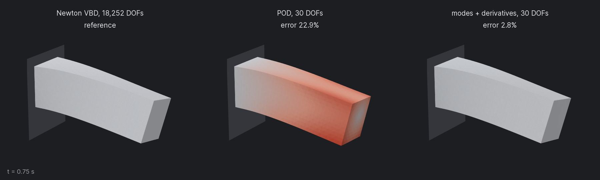
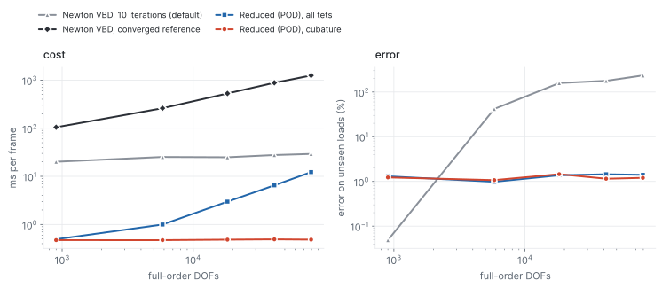
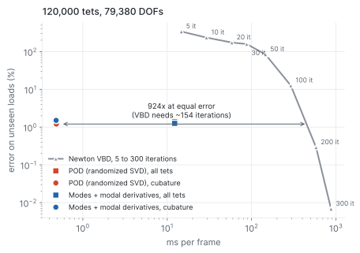
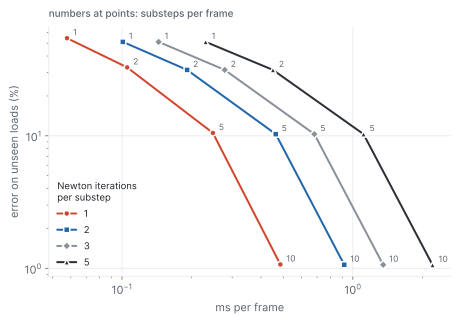
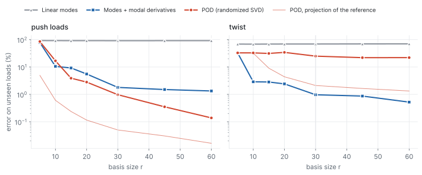
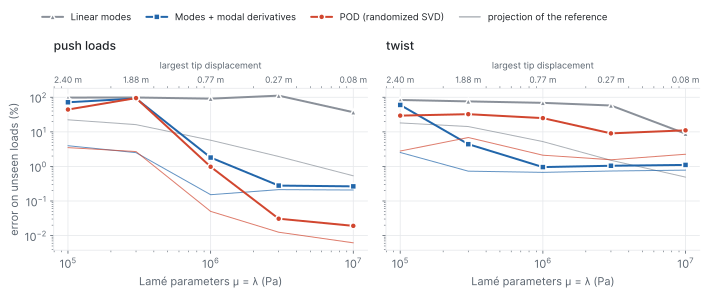
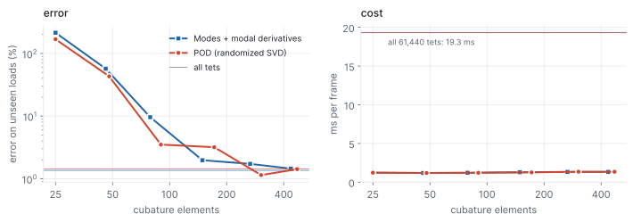

Overview
Soft bodies in Newton are simulated with Vertex Block Descent (VBD), which updates every vertex of the tetrahedral mesh on every iteration. On fine meshes this gets expensive, and at Newton's default iteration count VBD is far from converged. Most of the motion of an elastic body is much simpler than its mesh, though. A beam that bends, sways or twists moves mainly in a small number of smooth shapes.
This project adds a reduced-order solver to Newton built on that observation. It uses the same energy and time integrator as VBD, but the deformation is restricted to a 30-dimensional subspace, so each Newton step solves a 30×30 system instead of updating tens of thousands of vertices. The basis comes either from the vibration modes of the mesh and their modal derivatives, computed with shift-invert Lanczos, or from snapshots of a few full-order runs, compressed with a randomized SVD. Element forces are integrated with a cubature rule over a few hundred tets, so the cost of a step does not depend on the size of the mesh.
Results on a 120,000-tet beam (79,380 DOFs), with errors measured against a converged full-order run on loads that were not used for training:
| solver | ms per frame | mean error |
|---|---|---|
| VBD, 10 iterations (Newton's default) | 29.2 | 234% |
| VBD, 154 iterations | 448 | 1.2% |
| reduced, 30 DOFs | 0.49 | 1.2% |
At equal error the reduced solver is about 900 times faster than VBD. It is also 60 times faster than VBD at its default 10 iterations, but that comparison doesn't mean much: at 10 iterations VBD is far from converged on this mesh, and its error is larger than the displacement itself.
Method
The deformed positions are written as \(x = X + Uq\), where \(X\) is the rest shape, \(U\) is a fixed \(3N \times 30\) basis normalized so that \(U^\top M U = I\), and \(q\) are the reduced coordinates. Each substep minimizes the backward Euler objective
\[ E(q) = \frac{1}{2h^2}\,\lVert q - y \rVert^2 + \sum_e w_e\, \Psi_e\big(F_e(q)\big), \qquad y = q_n + h\,\dot q_n + h^2\, U^\top f_\text{ext} \]over \(q\). Here \(\Psi\) is the stable Neo-Hookean energy (Smith et al. 2018) with the damping term VBD uses, so the subspace is the only modeling difference between the two solvers. As a check, running the reduced solver with a full basis gives a standard full-order Newton solver, and its trajectories match converged VBD to within 0.09%.
Modal basis
The vibration modes are the solutions of \(K\phi = \omega^2 M\phi\) with the smallest eigenvalues,
where \(K\) is the stiffness matrix at rest. I compute them with shift-invert Lanczos
(scipy.sparse.linalg.eigsh with a shift \(\sigma\)). This needs one sparse LU factorization
of \(K - \sigma M\), and it maps the eigenvalues near \(\sigma\) to the largest eigenvalues of
\((K - \sigma M)^{-1} M\), which Lanczos finds quickly.
The linear modes by themselves give 84 to 99% error on these tests. A linear basis can't represent large rotations, and the rotated shapes it can reach are much too stiff under a nonlinear material. Adding the modal derivatives of the lowest modes (Barbič and James 2005) and the static deflection under gravity brings the error down to about 1%, still without any training data.
POD basis
The second basis is fit to data. I run full-order VBD on four training loads, collect mass-weighted displacement snapshots, and keep the leading 30 left singular vectors. The snapshot matrix has tens of thousands of rows and only a few hundred columns, so I use a randomized SVD with power iterations (Halko et al. 2011) instead of a full decomposition. POD is very accurate on loads similar to the training set, but it can't represent deformations that never appear in the snapshots. None of the training loads twist the beam, and on the twist test POD is 23% off.
The SVD itself multiplies \(A\) by a Gaussian sketch with a few extra columns, sharpens the range estimate with a QR-stabilized power iteration, and takes the exact SVD of the small projected matrix \(Q^\top A\):
def randomized_svd(A, k, *, oversample=10, n_iter=4, seed=0):
rng = np.random.default_rng(seed)
m, n = A.shape
p = min(n, k + oversample)
Y = A @ rng.standard_normal((n, p))
Q, _ = np.linalg.qr(Y)
for _ in range(n_iter):
Z, _ = np.linalg.qr(A.T @ Q)
Q, _ = np.linalg.qr(A @ Z)
B = Q.T @ A
Ub, S, Vt = np.linalg.svd(B, full_matrices=False)
return (Q @ Ub)[:, :k], S[:k], Vt[:k]GPU implementation
Since \(U\) is fixed, the deformation gradient of each element is affine in \(q\): \(\operatorname{vec}(F_e - I) = B_e q\), with a \(9 \times 30\) matrix \(B_e\) precomputed per element. One Newton iteration then consists of
- computing \(\operatorname{vec}(F - I) = Bq\) for all elements with one GEMV,
- evaluating the stress and Hessian of each element, with the Hessian applied as a 3×3 operator rather than assembled as a 9×9 matrix,
- reducing to the 30×30 system \(H_r = \sum_e w_e B_e^\top \mathcal{H}_e B_e\) and its gradient with
wp.tile_matmul, - solving \((H_r + I/h^2)\,d = \nabla E\) by Cholesky in a single thread block, and
- a line search over \(q - \alpha d\) for \(\alpha = 1, \tfrac12, \tfrac14, \tfrac18\).
Steps 3 and 4 use Warp's tile API. B stacks the \(B_e\) of all integrated elements,
C holds the products \(\mathcal{H}_e B_e\) from step 2, and P the stresses.
Each thread block walks over its share of rows in chunks of TR and accumulates
\(B^\top C\) and \(B^\top P\) into 30×30 and 30×1 tiles, which are then added into the global
result. A single block factors and solves the 30×30 system afterwards. R (the basis size) and
TR are compile-time constants. Two lines that reset the accumulators are left out:
@wp.kernel
def reduce_kernel(B, C, P, n_chunks, n_blocks, H_r, g_r):
blk, _lane = wp.tid()
H_acc = wp.tile_zeros(shape=(R, R), dtype=float)
g_acc = wp.tile_zeros(shape=(R, 1), dtype=float)
c = blk
while c < n_chunks:
tB = wp.tile_load(B, shape=(TR, R), offset=(c * TR, 0))
tC = wp.tile_load(C, shape=(TR, R), offset=(c * TR, 0))
tP = wp.tile_load(P, shape=(TR, 1), offset=(c * TR, 0))
tBt = wp.tile_transpose(tB)
wp.tile_matmul(tBt, tC, H_acc)
wp.tile_matmul(tBt, tP, g_acc)
c += n_blocks
wp.tile_atomic_add(H_r, H_acc)
wp.tile_atomic_add(g_r, g_acc)
@wp.kernel
def solve_kernel(H_r, g_r, q, y, inv_h2, d):
tH = wp.tile_load(H_r, shape=(R, R), storage="shared")
tA = wp.tile_diag_add(tH, wp.tile_full(shape=R, value=inv_h2, dtype=float))
tg = wp.tile_load(g_r, shape=(R, 1))
tq = wp.tile_load(q, shape=R)
ty = wp.tile_load(y, shape=R)
grad = wp.tile_reshape(tg, shape=(R,)) + (tq - ty) * inv_h2
...
L = wp.tile_cholesky(tA)
wp.tile_store(d, wp.tile_cholesky_solve(L, grad))None of these steps read anything back to the host, so the ten substeps of a frame are captured in one CUDA graph.
Cubature
Evaluating every element would still make the cost grow with the mesh. Following An et al. (2008), I pick a small set of elements and nonnegative weights \(w_e\) with greedy NNLS, so that the weighted sum of element forces matches the exact reduced forces on training poses. About 300 elements are enough, which cuts the element loop on the finest mesh from 120,000 tets to 300.
Results
All tests use a 1.2 m cantilever clamped at one end, with \(\mu = \lambda = 1\) MPa, simulated for 2 s at 60 fps with 10 substeps per frame on a single H100. The error metric is the mass-weighted relative trajectory error against a converged full-order run, averaged over two push loads that were not part of the training set.
error05 cmfull-order answer

Load
Basis
0.00 s
| full DOFs | tets | VBD default ms / error | reduced ms | reduced error mean / max | VBD at same error iterations / ms | speedup, same error | speedup vs VBD default |
|---|---|---|---|---|---|---|---|
| 900 | 960 | 20.1 / 0.05% | 0.47 | 1.23 / 1.93% | 6 / 12 | 26x | 42x |
| 5,832 | 7,680 | 25.3 / 42% | 0.47 | 1.07 / 1.67% | 24 / 61 | 129x | 53x |
| 18,252 | 25,920 | 24.9 / 159% | 0.48 | 1.45 / 2.52% | 53 / 132 | 272x | 51x |
| 41,616 | 61,440 | 27.7 / 178% | 0.49 | 1.15 / 1.99% | 102 / 281 | 571x | 56x |
| 79,380 | 120,000 | 29.2 / 234% | 0.49 | 1.20 / 2.08% | 154 / 448 | 924x | 60x |
All rows use the POD basis with r = 30, at most 400 cubature tets and one Newton iteration per substep. The VBD iteration count at equal error is interpolated from VBD's error against iteration count on a log-log scale.



Basis comparison
| basis, finest mesh | training runs | diagonal push | heavy side push | twist |
|---|---|---|---|---|
| POD (randomized SVD) | yes | 0.32% | 2.08% | 23.2% |
| modes + derivatives | no | 0.45% | 2.56% | 1.17% |
| linear modes only* | no | 84% | 99% | 69% |
*Only run on the 5,832-DOF mesh, without cubature.
POD is the most accurate on the two push loads, which resemble its training data. The modal-derivative basis is slightly worse on those but much better on the twist, and it doesn't need any full-order simulations to build.

Stiffness and cubature


Videos
Limitations
- VBD with its default 10 iterations is far from converged on the finer meshes (42% error at 5,832 DOFs, 234% at 79,380). All errors on this page are therefore measured against VBD run for 50 to 400 iterations, depending on the mesh. On the three smaller meshes these references agree with an independent full-order Newton/PCG solver to within 0.08%.
- In float32 the usual form of the stable Neo-Hookean energy loses most of its precision at small strain. With \(\mu = 100\) MPa the beam did not move at all, because the line search couldn't see the energy decrease. The kernels are written in terms of \(H = F - I\) instead and are tested against float64 finite differences down to \(10^{-4}\) strain.
- The square beam has repeated eigenvalues and ARPACK starts from a random vector, so the modal basis was not reproducible between runs. The modal-derivative twist error on the 18,252-DOF mesh is 1.0% in the parameter sweeps but 2.8% in the run shown in Figure 1 and the videos. The start vector is fixed now, but the sweeps have not been rerun.
- There is no contact handling, and both POD and the cubature rule depend on the choice of training loads. All numbers come from a single run.
Code
SolverReducedFEM is a subclass of Newton's SolverBase with its kernels written
in Warp, so it can be used from an ordinary Newton script. The repository contains the solver, both basis constructions, the cubature
fit, the full-order reference solver, the scripts for every experiment on this page, and an example that
runs the reduced beam next to a full-order one:
python examples/example_reduced_cantilever.py --viewer gl --cubature 300Setting it up on another model looks like this:
from newton_subspace import SolverReducedFEM, TetMesh, modal_basis
from newton_subspace.cubature import fit_cubature
mesh = TetMesh.from_model(model) # any newton.Model with tetrahedra
U = modal_basis(mesh, 30, gravity_mode=True, modal_derivatives=True)
# Q: training poses in reduced coordinates
ids, w, _ = fit_cubature(mesh, U, Q, max_points=300, tol=1e-4)
solver = SolverReducedFEM(model, U, cubature=(ids, w))
for _ in range(10):
solver.step(state, None, None, None, dt)
solver.write_state(state)github.com/caleblx/newton-subspace
References
- J. Barbič, D. James. Real-time subspace integration for St. Venant-Kirchhoff deformable models. SIGGRAPH 2005.
- S. S. An, T. Kim, D. James. Optimizing cubature for efficient integration of subspace deformations. SIGGRAPH Asia 2008.
- B. Smith, F. de Goes, T. Kim. Stable Neo-Hookean flesh simulation. ACM Transactions on Graphics 2018.
- N. Halko, P.-G. Martinsson, J. Tropp. Finding structure with randomness. SIAM Review 2011.
- A. H. Chen, Z. Liu, Y. Yang, C. Yuksel. Vertex Block Descent. SIGGRAPH 2024.